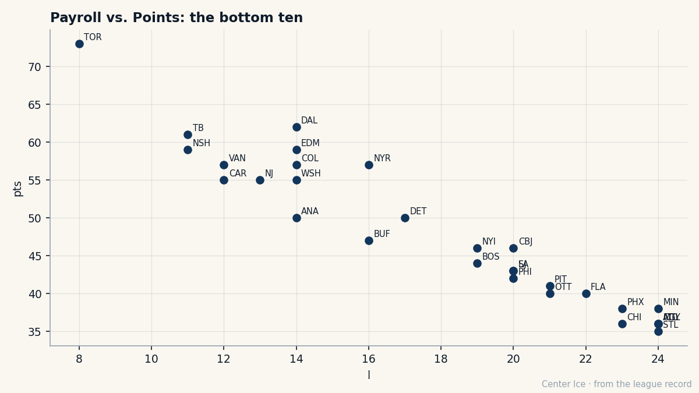

At 21, the Index finally agrees with the draft: Ilya Kovalchuk, a 156 pace, and a 36-point room
The first Russian ever taken first overall is scoring seventh in the league on a club that cannot win, with one year left at $1.10M.
 Carol BinghamFeatures writer · Rinkside
Carol BinghamFeatures writer · Rinkside Ilya Kovalchuk92 is scoring at a 156 pace for
Ilya Kovalchuk92 is scoring at a 156 pace for  Atlanta Thrashers, seventh in the league, and for the first time the Bureau's Development Index is moving with the man instead of waiting on him.
Atlanta Thrashers, seventh in the league, and for the first time the Bureau's Development Index is moving with the man instead of waiting on him.
He has 80 points in 42 games, 37 goals and 43 assists, on 20.1 minutes a night. The Bureau published its new risers this edition and he is on them, up five on the Index, the form term the risers carry next to a base of 89. The Book has him at 86 today. His speed grades 98. His shot power grades 97.
He is 21 years old. This is his fourth NHL season, and read end to end it is the clearest straight line the league is running right now.
The arc: 51, 67, 134, and now a 156
| season | goals | points |
|---|---|---|
| 2001-02 | 29 | 51 |
| 2002-03 | 38 | 67 |
| 2003-04 | 72 | 134 |
| 2004-05 (42 games) | 37 | 80 |
Kovalchuk grew up in Tver, played two seasons for Spartak Moscow's senior club before the draft, and wore the number 17 for Valeri Kharlamov, the Soviet winger of the 1970s. In 2001 the Thrashers took him first overall, the first Russian ever picked at the top of the entry draft. Four years later the kid from Tver is scoring the fifth-highest pace in the league and the room around him is bottom-right on every chart Atlanta owns.
His rookie season ended with a shoulder injury, 17 games left unplayed, and he still put up 29 goals and 51 points. He improved to 38 goals and 67 points, then to 72 goals and 134 last season. The 72 goals sat behind only  Jarome Iginla89's 92 and
Jarome Iginla89's 92 and  Ryan Smyth85's 74 on the league's final goals column, and he played in the 2004 All-Star Game. Fifty-one points, 67, 134. The pace this year says 156.
Ryan Smyth85's 74 on the league's final goals column, and he played in the 2004 All-Star Game. Fifty-one points, 67, 134. The pace this year says 156.
The Book has never doubted the tools. Speed 98, shot power 97, acceleration 94, agility 93. What the Index is logging now is the rest of it arriving on schedule.
He is seventh, Heatley is seventeenth, and nobody else is in the top 30
Atlanta Thrashers is 13-24-2 with 36 points, 161 goals for and 180 against. That is 29th of 30, one point ahead of  St. Louis Blues's 35 and 37 points behind the division lead. The whole argument for the season fits in two locker room stalls: Kovalchuk at 80 points and
St. Louis Blues's 35 and 37 points behind the division lead. The whole argument for the season fits in two locker room stalls: Kovalchuk at 80 points and  Dany Heatley90, 23, at 75 in 39 games, a 158 pace. Kovalchuk sits seventh in the league, Heatley seventeenth. No other Thrasher appears anywhere in the top 30.
Dany Heatley90, 23, at 75 in 39 games, a 158 pace. Kovalchuk sits seventh in the league, Heatley seventeenth. No other Thrasher appears anywhere in the top 30.
In the Atlanta Thrashers crease,  Byron Dafoe82 has played 39 games and gone 15-22 with a 4.09 goals against and a 0.826 save percentage. The Book has him at 76. When a 21-year-old shoots pucks worth 97 grades into that kind of January, the game asks him for more than the 80 points already on the sheet.
Byron Dafoe82 has played 39 games and gone 15-22 with a 4.09 goals against and a 0.826 save percentage. The Book has him at 76. When a 21-year-old shoots pucks worth 97 grades into that kind of January, the game asks him for more than the 80 points already on the sheet.

The scatter puts Atlanta at the edge of the league's economics. The payroll is $36.79M, third-lowest in the league. The revenue is $43.49M, the lowest of any club in hockey, in a building averaging 13,709 at $78 a ticket. The franchise turns a $17.16M profit anyway, which tells you the money is there; it just has not found a way to put it on the ice around the player who grades 98 in speed.
The contract says June, the pace says everything else
Kovalchuk is on $1.10M with one year left, and the Bureau's Contract Ledger carries him in the last-year class beside  Marian Gaborik97, who is 22, on the same $1.10M, and graded 96. Morale reads 92. That is how this league's best young wingers are paid right now: cheap, on expiring paper, scoring like the market will notice in a few months.
Marian Gaborik97, who is 22, on the same $1.10M, and graded 96. Morale reads 92. That is how this league's best young wingers are paid right now: cheap, on expiring paper, scoring like the market will notice in a few months.
The fallers list this edition is full of men holding on. Kovalchuk is the opposite case: the Book's base is higher than the overall it prints today, the form term is +5, and the pace of 156 is the fourth-highest number in the league table. The Development Index spends most of the season telling clubs which of their players are slipping. This month, for the first time in his four years, it has Atlanta's first overall pick going the right way, up five, while the team sits at 36 points.
Atlanta drafted him first overall in 2001. He has scored 51 points, 67, 134, and a 156 pace. He is on $1.10M through June, and he turns 22 in April.